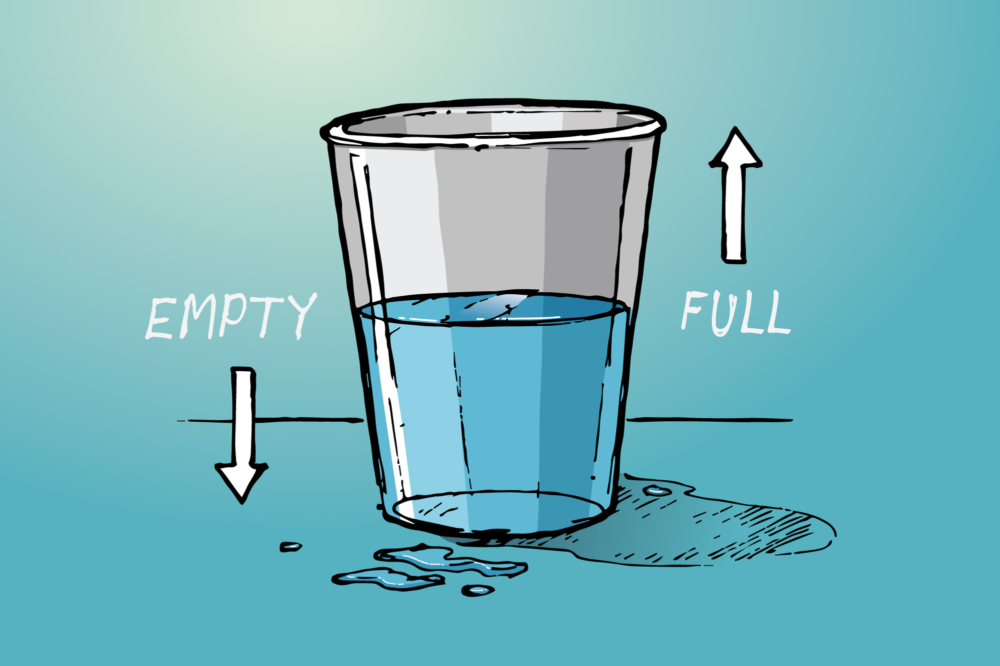

My Work
Bitcoin Price Prediction
Bitcoin Price Prediction Time-Series Project
This endeavor aims to identify cyclical patterns and predict Bitcoin's price with a higher accuracy than baseline models. The dataset, sourced from Kaggle, encompasses Bitcoin's open, high, low, and closing prices, alongside transaction volumes. Key deliverables include a well-documented Jupyter notebook, a comprehensive README, and Python modules that facilitate data acquisition and preprocessing.
American Sentiment Analysis
Discovering drivers of Americas prospective thinking
The project uses American Trends Panel Datasets to predict American sentiments, especially pessimism about the future. Data from Pew Research covers diverse aspects of American life, including demographics. Analysis revealed that public education and U.S. economics are key drivers of pessimism, while age and income aren't significant.
NLP - Github Lang Prediction

Natural Language Processing - Github Coding Language Prediction
The "Natural Language Processing - Github Programming Language Prediction" project aims to predict a repository's programming language based on its README file content. By scraping 30,000 GitHub README files and primarily focusing on Javascript repositories, the team developed a model achieving over 94.8% accuracy in predictions. The project encompasses the entire data science pipeline, including data acquisition, preprocessing, exploration, modeling, and presentation.